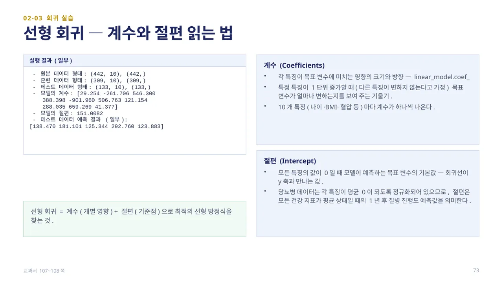
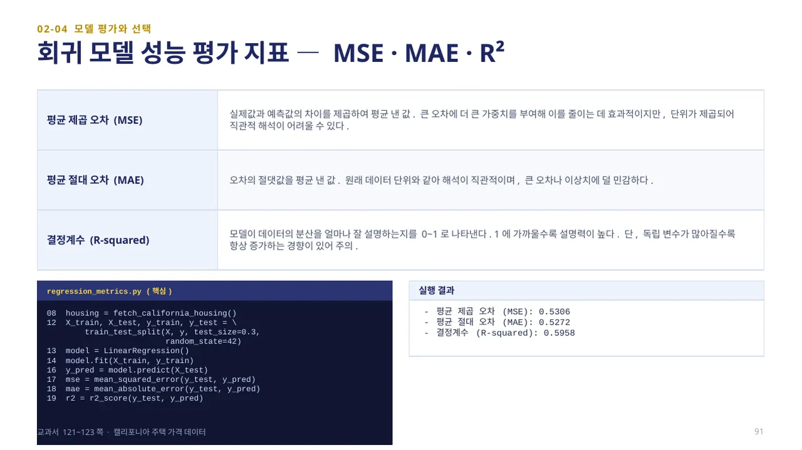
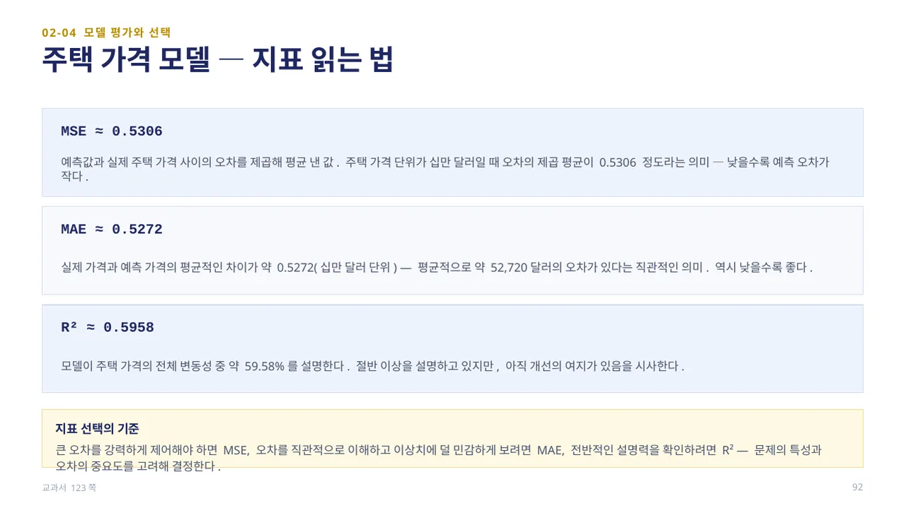

회귀는 입력 데이터를 바탕으로 연속적인 숫자 값을 예측합니다(예: 집값·판매량·온도 예측). 선형 회귀는 입력 특징과 목표 변수 사이에 선형 관계가 있다고 가정하고, 이를 가장 잘 설명하는 직선(회귀선)을 찾아 새로운 입력값에 대한 예측값을 도출합니다.
linear_regression.py는 당뇨병 데이터(load_diabetes, 건강 지표 10개로 1년 후 질병 진행도를 예측)를 사용합니다. 17~18행에서 LinearRegression()을 만들고 fit(X_train, y_train)으로 학습시키며, 19~20행에서 학습된 coef_(계수)와 intercept_(절편)을 확인하고, 22행에서 predict(X_test)로 예측합니다. (교과서 106~107쪽)

계수(Coefficients)는 각 특징이 목표 변수에 미치는 영향의 크기와 방향을 나타냅니다 — 특정 특징이 1단위 증가할 때(다른 특징은 변하지 않는다고 가정) 목표 변수가 얼마나 변하는지를 보여 주는 기울기로, 10개 특징(나이·BMI·혈압 등)마다 계수가 하나씩 나옵니다. 음수 계수(예: -901.96)는 그 특징이 커질수록 진행도가 낮아지는 방향임을 뜻합니다.
절편(Intercept)은 모든 특징의 값이 0일 때 모델이 예측하는 목표 변수의 기본값 — 회귀선이 y축과 만나는 값입니다. 당뇨병 데이터는 각 특징이 평균 0이 되도록 정규화되어 있으므로, 절편 151.0082는 모든 건강 지표가 평균 상태일 때의 1년 후 질병 진행도 예측값을 의미합니다. 선형 회귀는 계수(개별 영향) + 절편(기준점)으로 최적의 선형 방정식을 찾는 것입니다. 교과서 108쪽 본문은 이 값을 "약 152.0722"로 서술하지만, 같은 쪽 코드 실행 결과와 실제 재실행 값은 151.0082입니다 — 이 자료는 실행 결과와 일치하는 151.0082를 기준으로 설명합니다. (교과서 107~108쪽)

회귀 모델의 성능은 세 가지 지표로 평가합니다. 평균 제곱 오차(MSE)는 실제값과 예측값의 차이를 제곱하여 평균 낸 값으로, 큰 오차에 더 큰 가중치를 부여합니다. 평균 절대 오차(MAE)는 오차의 절댓값을 평균 낸 값으로, 원래 데이터 단위와 같아 해석이 직관적이며 큰 오차나 이상치에 덜 민감합니다. 결정계수(R²)는 모델이 데이터의 분산을 얼마나 잘 설명하는지를 0~1로 나타내며, 1에 가까울수록 설명력이 높습니다.
regression_metrics.py는 캘리포니아 주택 가격 데이터(fetch_california_housing)로 LinearRegression을 학습시킨 뒤 mean_squared_error·mean_absolute_error·r2_score를 계산합니다. 실행 결과는 MSE 0.5306, MAE 0.5272, R² 0.5958입니다. (교과서 121~123쪽)

MSE ≈ 0.5306은 예측값과 실제 주택 가격 사이의 오차를 제곱해 평균 낸 값으로, 낮을수록 예측 오차가 작다는 뜻입니다. MAE ≈ 0.5272는 실제 가격과 예측 가격의 평균적인 차이가 약 0.5272(십만 달러 단위) — 평균적으로 약 52,720달러의 오차가 있다는 직관적인 의미입니다.
R² ≈ 0.5958은 모델이 주택 가격의 전체 변동성 중 약 59.58%를 설명한다는 뜻입니다. 절반 이상을 설명하고 있지만 아직 개선의 여지가 있습니다. 큰 오차를 강력하게 제어해야 하면 MSE, 오차를 직관적으로 이해하고 이상치에 덜 민감하게 보려면 MAE, 전반적인 설명력을 확인하려면 R²를 선택합니다. (교과서 123쪽)
 인공지능 파이썬 실무
인공지능 파이썬 실무